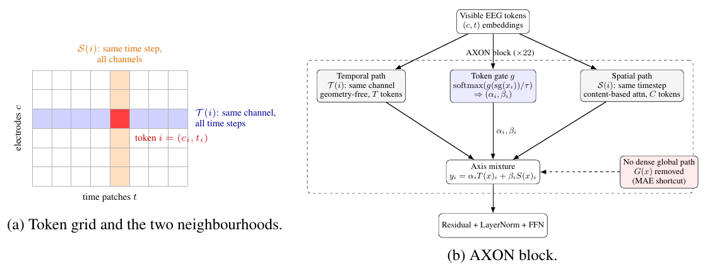

braindecode.models.AXON#
- class braindecode.models.AXON(n_outputs=None, n_chans=None, chs_info=None, n_times=None, input_window_seconds=None, sfreq=None, patch_size=200, patch_stride=180, embed_dim=512, depth=22, num_heads=8, ffn_expansion=4, temporal_window=5, gate_reduction=4, head_hidden_dim=128, normalize_input=True, activation=<class 'torch.nn.modules.activation.GELU'>, head_activation=<class 'torch.nn.modules.activation.ELU'>, drop_prob=0.3, att_drop_prob=0.0, channel_strategy='native', channel_strategy_kwargs=None)[source]#
AXON, an axis-factorized EEG foundation model from Jain et al. (2026) [axon2026].
Foundation Model Attention/Transformer Channel

(a) The channel-time token grid with the temporal and spatial neighbourhoods of a token; (b) an AXON block, which mixes the two paths with a token gate. Reproduced from Fig. 1 of [axon2026] (CC BY-NC-ND 4.0).#
AXON (AXis-factorized Operator Network) is a transformer encoder pretrained with masked autoencoding on clinical and research EEG. Each recording window is cut into tokens, one per electrode per one-second patch, so the tokens form a grid of electrodes by time steps. Instead of dense self-attention over all tokens, every layer runs two attention paths in parallel:
a temporal path, in which each token attends to the tokens of its own electrode across time, and
a spatial path, in which each token attends to the tokens of all electrodes at the same time step.
A small gate predicts, for every token, two weights that sum to one, and the token’s update is the weighted sum of the two path outputs. On a full electrode-by-time grid any two tokens are connected after two layers.
Temporal windows
The temporal path is computed twice: once over all time steps of the electrode and once restricted to time steps at most
temporal_windowpatches away (a band of up to2 * temporal_window + 1patches). A second per-token gate mixes the two. When a window has at mosttemporal_window + 1patches the two branches are identical.Channel positions
AXON is montage-agnostic: electrodes are identified only by their 3D scalp position, taken from
chs_info[i]["loc"][:3](MNE head coordinates, in metres). Channels without a valid position are looked up by name in MNE’sstandard_1005montage, in head coordinates. Channel order does not matter.Expected input
sampling rate 200 Hz (resample beforehand);
windows of at least one patch (
patch_sizesamples, 1 s);by default each channel is z-scored within each window inside the model (
normalize_input=True), as during the reference evaluation. The z-score is scale-free, so data in volts (MNE’s default) or microvolts give the same output.
Important
Pretrained weights. The 118.6M-parameter encoder is on the Hugging Face Hub (MannasAI/axon-eeg, License) and is loaded with
from_pretrained(). The classification head is not pretrained and must be trained for your task:import mne from braindecode.models import AXON from braindecode.util import resolve_montage_name raw = mne.io.read_raw_edf("recording.edf", preload=True) raw.set_montage(resolve_montage_name("standard_1020"), match_case=False) raw.resample(200) model = AXON.from_pretrained( "MannasAI/axon-eeg", chs_info=raw.info["chs"], n_outputs=4, n_times=800, )
For linear probing, freeze everything except
final_layer. The reference fine-tuning recipe also kept the two gates frozen.- Parameters:
n_outputs (int) – Number of outputs of the model. This is the number of classes in the case of classification.
n_chans (int) – Number of EEG channels.
chs_info (list of dict) – Information about each individual EEG channel. This should be filled with
info["chs"]. Refer tomne.Infofor more details.n_times (int) – Number of time samples of the input window.
input_window_seconds (float) – Length of the input window in seconds.
sfreq (float) – Sampling frequency of the EEG recordings.
patch_size (
int) – Number of samples per patch (token length). 200 samples = 1 s at 200 Hz.patch_stride (
int) – Step between consecutive patches, in samples.embed_dim (
int) – Token embedding dimension.depth (
int) – Number of AXON blocks.num_heads (
int) – Number of attention heads in each path.ffn_expansion (
int) – Width multiplier of the gated feed-forward network.temporal_window (
int) – Radius, in patches, of the restricted temporal branch.gate_reduction (
int) – Hidden size of the gate MLPs ismax(16, embed_dim // gate_reduction).head_hidden_dim (
int) – Hidden size of the classification head.normalize_input (
bool) – If True, z-score each channel within each window before patching.activation (
type[Module]) – Activation of the gate MLPs and of the spatial position encoder.head_activation (
type[Module]) – Activation of the classification head.drop_prob (
float) – Dropout probability in the classification head.att_drop_prob (
float) – Attention dropout probability (0 in the pretrained model).channel_strategy (
str) – How another montage reaches the encoder; seeEEGModuleMixin. AXON reads any montage natively, so the default"native"is usually what you want.channel_strategy_kwargs (
Optional[dict]) – Options ofchannel_strategy.
- Raises:
ValueError – If some input signal-related parameters are not specified: and can not be inferred.
Notes
If some input signal-related parameters are not specified, there will be an attempt to infer them from the other parameters.
References
Hugging Face Hub integration
When the optional
huggingface_hubpackage is installed, all models automatically gain the ability to be pushed to and loaded from the Hugging Face Hub. Install with:pip install braindecode[hub]
Pushing a model to the Hub:
from braindecode.models import AXON # Train your model model = AXON(n_chans=22, n_outputs=4, n_times=1000) # ... training code ... # Push to the Hub; ``datasets`` and ``base_model`` go to the card model.push_to_hub( repo_id="username/my-axon-model", commit_message="Initial model upload", model_card_kwargs={"datasets": ["BNCI2014_001"]}, )
Loading a model from the Hub:
from braindecode.models import AXON # Load pretrained model model = AXON.from_pretrained("username/my-axon-model") # Data the weights were trained on, from the Hub model card print(model.card_data.datasets if model.card_data else None) # Load with a different number of outputs (head is rebuilt automatically) model = AXON.from_pretrained("username/my-axon-model", n_outputs=4)
Extracting features and replacing the head:
import torch x = torch.randn(1, model.n_chans, model.n_times) # Extract encoder features and a mean-pooled 2-D embedding out = model(x, return_features=True) embedding = out["embedding"] # (batch, dim) features = out["features"] # Replace the classification head model.reset_head(n_outputs=10)
Note that
torch.jit.scriptreturns features only on models whoseforwarddeclaresreturn_features.Saving and restoring full configuration:
import json config = model.get_config() # all __init__ params with open("config.json", "w") as f: json.dump(config, f) model2 = AXON.from_config(config) # reconstruct (no weights)
All model parameters (both EEG-specific and model-specific such as dropout rates, activation functions, number of filters) are automatically saved to the Hub and restored when loading.
See Loading and Adapting Pretrained Foundation Models for a complete tutorial.
Methods
- encode(x)[source]#
Encode EEG into the grid of token embeddings.
This is the encoder output before pooling and the classification head.
- forward(x, return_features=False)[source]#
Classify a batch of EEG windows.
Tokens are averaged over electrodes and patches, then passed to the classification head
final_layer.- Parameters:
- Returns:
Logits of shape (batch, n_outputs), or the feature dict when
return_featuresis True.- Return type:
torch.Tensor or dict
- reset_head(n_outputs)[source]#
Replace the classification head for a new number of outputs.
The encoder is left unchanged; the new head is randomly initialised.
Examples
>>> from braindecode.models import BENDR >>> model = BENDR(n_chans=22, n_times=1000, n_outputs=4) >>> model.reset_head(10) >>> model.n_outputs 10
Added in version 1.4.